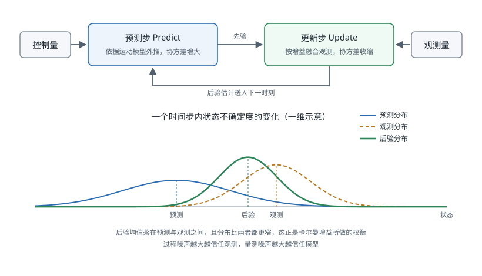

贝叶斯滤波器族
引言
传感器融合的数学内核是递归贝叶斯估计：用运动模型预测状态的先验分布，再用观测更新为后验分布。不同滤波器的差别只在于如何表示这个分布与如何处理非线性。卡尔曼滤波（Kalman Filter, KF）假设分布为高斯且系统线性，给出解析最优解；扩展卡尔曼滤波（EKF）用一阶泰勒展开线性化；无迹卡尔曼滤波（UKF）改用确定性采样的 Sigma 点传播分布，避免求雅可比矩阵；粒子滤波（Particle Filter, PF）则用蒙特卡洛样本表示任意分布，代价是计算量。本页面依次推导这四类滤波器并给出选型依据。
概率估计框架
传感器融合的理论基础是概率论与贝叶斯统计，将状态估计问题纳入统一的概率推断框架。
贝叶斯估计基础
设机器人状态为 （如位姿、速度），传感器观测为 。贝叶斯后验估计（Bayesian Posterior Estimation）为：
其中：
- 为状态先验概率（Prior），表示融合观测前对状态的信念
- 为似然函数（Likelihood），表示在状态 下观测到 的概率（由传感器模型决定）
- 为后验概率（Posterior），融合观测后的更新信念
最大后验估计（Maximum A Posteriori, MAP）求解：
递归贝叶斯滤波框架
对于时序状态估计，递归贝叶斯滤波（Recursive Bayesian Filter）分两步交替执行：
预测步（Prediction Step）
利用运动模型 （状态转移概率），将上一时刻的后验传播到当前时刻，得到当前先验。
更新步（Update Step）
利用当前观测 和传感器模型 更新先验，得到后验。
卡尔曼滤波、扩展卡尔曼滤波、无迹卡尔曼滤波、粒子滤波均是该框架在不同假设下的具体实现。
卡尔曼滤波
卡尔曼滤波（Kalman Filter, KF）是线性高斯系统下递归贝叶斯滤波的最优解，由 Rudolf E. Kálmán 于 1960 年提出。
滤波器在每个时间步交替执行预测与更新两步。下图给出这一循环，以及状态不确定度在两步中的变化：预测使分布变宽，更新融合观测后分布收窄，且后验均值落在预测与观测之间。

系统模型
状态转移方程（运动模型）：
观测方程（传感器模型）：
其中：
- ：k 时刻系统状态向量
- ：状态转移矩阵（State Transition Matrix）
- ：控制输入矩阵
- ：控制输入向量
- ：过程噪声，协方差矩阵为
- ：观测向量
- ：观测矩阵（Observation Matrix）
- ：观测噪声，协方差矩阵为
预测步
利用上一时刻后验 和 计算当前先验：
先验状态预测：
先验协方差预测：
更新步
接收到观测 后，计算卡尔曼增益并更新状态：
卡尔曼增益（Kalman Gain）：
状态更新（后验状态估计）：
其中 称为创新量（Innovation）或残差（Residual）。
后验协方差更新：
直觉理解
卡尔曼增益 的物理意义是：在预测不确定性和观测不确定性之间动态权衡。
- 当 （传感器非常精确）：，完全信任观测
- 当 （运动模型非常精确）：，完全信任预测
适用条件
- 系统为线性（、 为常数矩阵）
- 噪声为高斯分布（，）
- 噪声不相关（ 与 独立，且不同时刻独立）
满足以上条件时，卡尔曼滤波给出均方误差（Mean Squared Error, MSE）意义下的最优估计。
扩展卡尔曼滤波
扩展卡尔曼滤波（Extended Kalman Filter, EKF）将标准卡尔曼滤波推广到非线性系统，通过局部线性化处理非线性运动模型和观测模型。
非线性系统模型
其中 和 为非线性函数。
Jacobian 矩阵线性化
EKF 在当前估计点处对 和 进行一阶泰勒展开（First-order Taylor Expansion），计算 Jacobian 矩阵：
过程 Jacobian（在 处求偏导）：
观测 Jacobian（在 处求偏导）：
EKF 预测与更新
预测步：
更新步（与 KF 类似，但用 Jacobian 替换线性矩阵）：
典型应用：IMU + GPS 融合
状态向量（以二维平面为例）：
- IMU 测量加速度 和角速度 ，通过非线性运动学方程更新状态（涉及三角函数，非线性）
- GPS 直接测量位置 ，观测方程为线性
EKF 以 IMU 频率（如 200 Hz）运行预测步，GPS 数据到达（如 10 Hz）时执行更新步，实现高频低延迟的位姿估计。
EKF 的局限性
- Jacobian 矩阵需要解析推导，工程实现复杂，对模型变更的适应性差
- 一阶线性化仅在局部准确，对强非线性系统（如大角度旋转、高速机动）精度下降明显
- 初始估计偏差较大时，线性化点不准确，滤波器可能发散
无迹卡尔曼滤波
无迹卡尔曼滤波（Unscented Kalman Filter, UKF）由 Julier 和 Uhlmann 于 1997 年提出，用确定性 Sigma 点集代替 EKF 的局部线性化，无需计算 Jacobian 矩阵。
无迹变换核心思想
无迹变换（Unscented Transform, UT）：与其线性化非线性函数，不如用一组精心选取的确定性采样点（Sigma 点）近似高斯分布，将这些点通过真实非线性函数传播，再从传播后的点集重新估计均值和协方差。
对于 维状态 ，选取 个 Sigma 点：
第 0 个 Sigma 点（均值点）：
第 个 Sigma 点（，正方向）：
第 个 Sigma 点（，负方向）：
其中 为缩放参数， 表示矩阵平方根的第 列。
Sigma 点权重
均值权重和协方差权重分别为：
常用参数：，，（适用于高斯分布）。
UKF 预测步
- 由 和 生成 Sigma 点
- 将每个 Sigma 点通过非线性函数传播：
- 加权重构先验均值和协方差：
UKF 更新步
- 将先验 Sigma 点通过观测模型传播：
- 加权重构预测观测均值和协方差：
- 计算 UKF 增益并更新：
UKF 与 EKF 对比
| 特性 | EKF | UKF |
|---|---|---|
| 线性化方法 | 一阶 Taylor 展开（Jacobian） | Sigma 点无迹变换 |
| 精度 | 一阶精度 | 二阶精度（高斯假设下） |
| Jacobian 要求 | 必须解析推导或数值近似 | 不需要 |
| 计算量 | 矩阵运算 | （稍大于 EKF） |
| 强非线性适应性 | 较差 | 较好 |
| 实现复杂度 | 中（需推导 Jacobian） | 较低（仅需实现非线性函数） |
粒子滤波
粒子滤波（Particle Filter, PF）又称序贯蒙特卡洛（Sequential Monte Carlo, SMC）方法，用大量随机采样的粒子（Particles）近似任意概率分布，突破了卡尔曼系列滤波器对高斯假设的限制。
基本原理
用 个粒子 表示后验分布，其中 为归一化权重（）：
序贯重要性采样
从建议分布（Proposal Distribution） 采样并更新权重。
最常用的建议分布为转移先验 ，此时权重更新简化为：
即权重正比于当前观测似然与上一时刻权重之积。
归一化：
粒子退化与重采样
长时间运行后，大多数粒子权重趋近于零，仅少数粒子承载有效信息，称为粒子退化（Particle Degeneracy）。用有效粒子数（Effective Sample Size, ESS）监测退化程度：
当 时触发重采样（Resampling）：按权重从当前粒子集有放回地抽取 个粒子，重置权重为 。常用重采样算法：
- 系统采样（Systematic Resampling）：最常用，计算量 ，方差最小
- 多项式采样（Multinomial Resampling）：最直观，计算量
- 残差采样（Residual Resampling）：介于两者之间
粒子滤波优势与局限
优势：
- 能处理任意非线性、非高斯系统
- 天然支持多假设状态（Multi-modal Distribution），适合机器人绑架（Kidnapped Robot）问题
- 实现简单，无需推导 Jacobian
局限：
- 粒子数量 与状态空间维度呈指数关系（维数灾难），高维状态时计算量爆炸
- 大量粒子带来高内存和计算开销
典型应用：FastSLAM
FastSLAM 将 SLAM 问题分解为机器人路径估计（粒子滤波）和地图特征估计（每个粒子维护独立的 EKF），实现了对非高斯噪声下 SLAM 问题的有效求解。
参考资料
- R. E. Kalman, "A New Approach to Linear Filtering and Prediction Problems," Journal of Basic Engineering, vol. 82, no. 1, pp. 35-45, 1960.
- S. J. Julier and J. K. Uhlmann, "Unscented Filtering and Nonlinear Estimation," Proceedings of the IEEE, vol. 92, no. 3, pp. 401-422, 2004.
- S. Thrun, W. Burgard, and D. Fox, Probabilistic Robotics, MIT Press, 2005.
- M. S. Arulampalam, S. Maskell, N. Gordon, and T. Clapp, "A Tutorial on Particle Filters for Online Nonlinear/Non-Gaussian Bayesian Tracking," IEEE Transactions on Signal Processing, vol. 50, no. 2, pp. 174-188, 2002.
- 传感器融合
- 融合工程实践